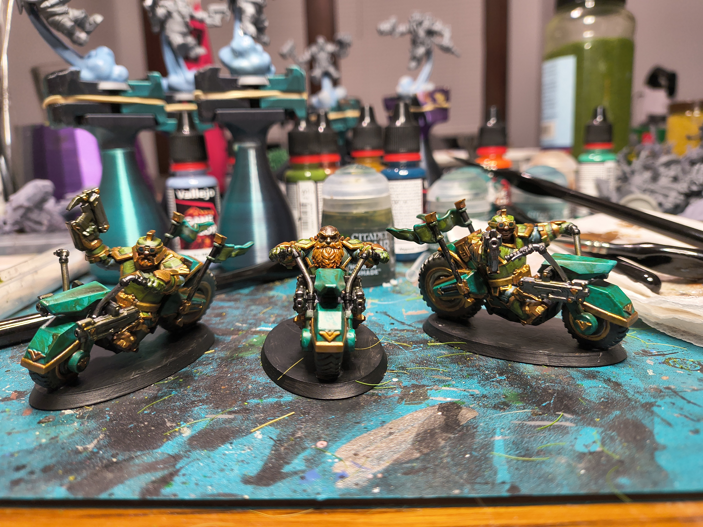
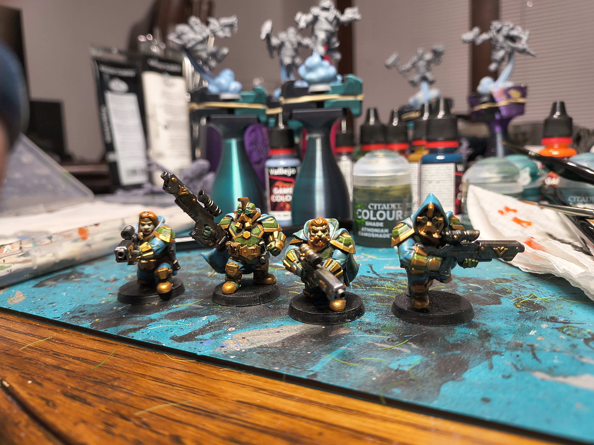
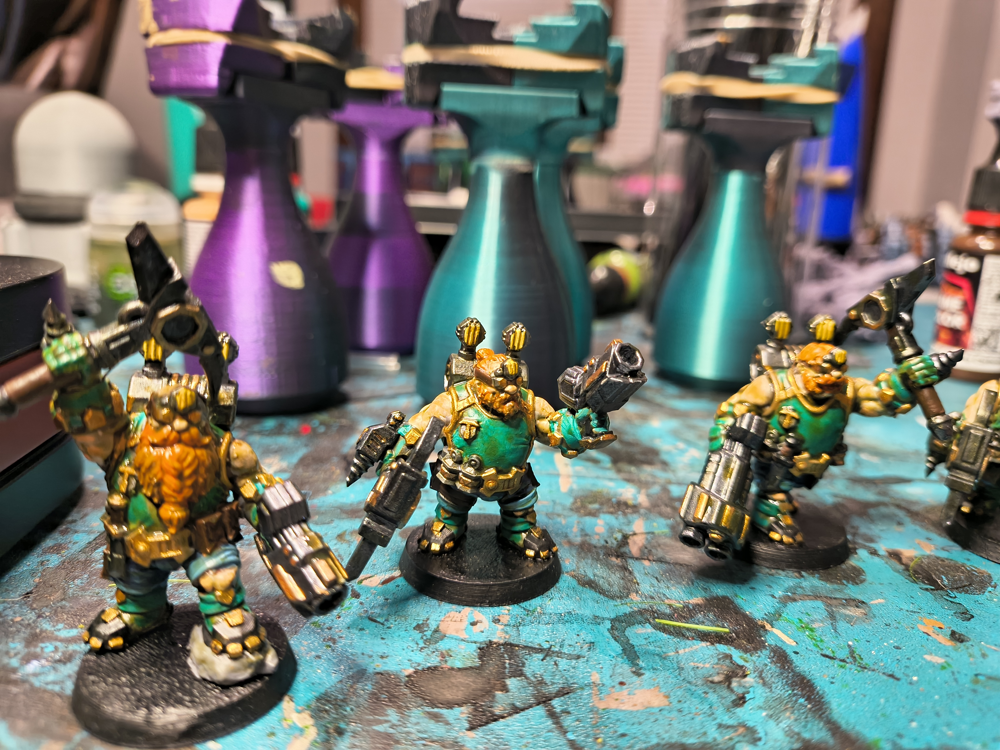
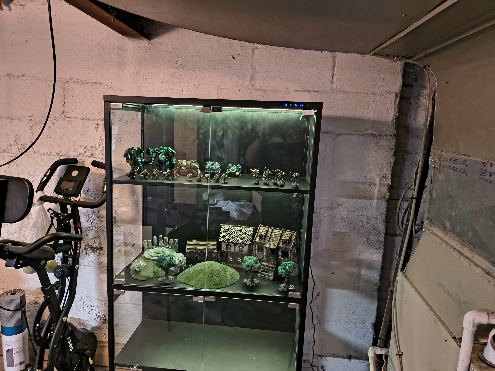
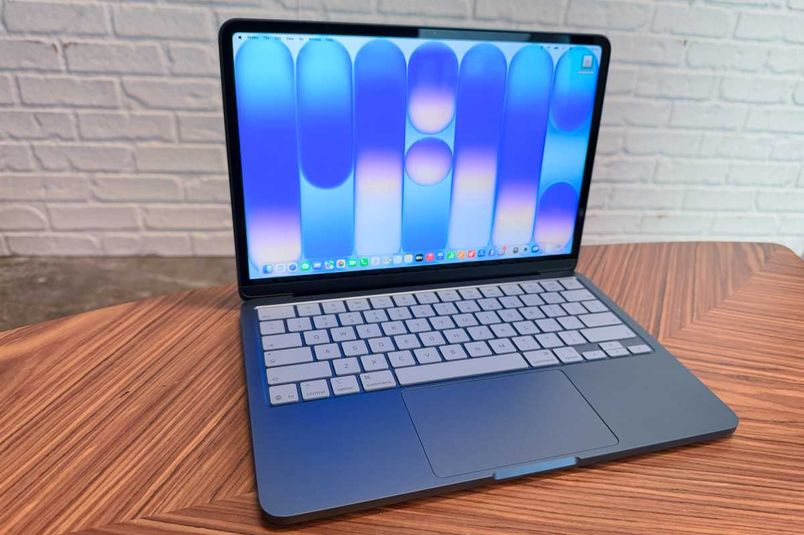

I recently purchased a new macbook neo. I bought mine in the indigo color. I wanted something small and light weight that wasn't a piece of crap like a chromebook. I also wanted great battery life so I could travel with it and not be worried about staying near an outlet.

I have a full size Asus gaming laptop that is 15.6", but I don't like the included keypad. I know, hot take. I like the functionality of the full keypad but what manufacturers do when they add that is they move the keyboard and its keys slightly to the left to accomodate the space those num keys take. This throws me off everytime I do any typihng on the PC. Ultimately I want to journal and create a website to do that, which is what you are viewing here, but also I would love to start working on a fantasy/sci-fi/mystery novel and all of those require a lot of typing. I'm currently using an external keyboard, but I need to leave the house periodically to avoid temptation and reduce distractions.
My first inclination is to use this space to vent and make statements about things that are bothering me, but I would much rather use this to stay positive. I think there is enough negative in the world and I definitely don't need anymore of that! Instead I think I will make a list of some of the things I want to do with this space.
I want to get into daily writing to build a habit. I have always wanted to be a writer, but as adult hood and a full time job are part of reality I have been blaming a lack of free time on my inability to get started on working on the novels I want to work on. My hope is that by building a daily habit of writing I can transition from blogging into also setting aside time for that as well.
There for a while I wanted to transition from my current job as a Site IT Analyst to a web developer. Now with the rise of "vibe coding" and massive layoffs in that industry has had me rethinking that goal. Unfortunately I do still enjoy web development, so this is an effort to do that, but more for fun and as a hobby vs trying to build up my skill base. Maybe something extra will come of it, I don't know, I'm not stressing about it though.
It's probably not common for people to say that they want to get into development as a way to get out of the house! I like the idea of taking my neo out somewhere and doing some coding outside the house. I have done this before when I was learning web development via Udemy (which I still am as I am not the best at it) and this really helped me to limit distractions from tv, games, etc. I hope to set up time after work to develop daily or write daily, but at worst I can do it from home.
My wife is always telling me I have too many hobbies. I think she is right, but I want to share those hobbies here. My biggest time consumer is probably everything related to One Page Rules(OPR). If you do not know, OPR is a Warhammer like game; which is a war game where you having battles with miniature models. OPR is a more opensource version of this game though, which means you can use any models and miniatures when playing. This alone makes it drastically cheaper than Warhammer, which is expensive. I am subscribed to the OPR patreon which means that I get models monthly that correspond with armies in the game, but they are STL files only. That means that in my free time I'm building armies with their software, downloading the STL's and printing them on my resin 3d printer. I then paint them, and finally after hours of work, I can play games with them! I play this primarily with my friend Mike, and sometimes Katie (my wife) also will play with us.
Since this is the hobby I spend the most time doing, below are some photos of models I've printed and painted.



